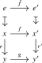
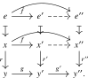
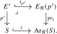

Fix an \(\infty \)-category \(S\) and a wide subcategory \(\Rr \subset S\). To freely adjoin a cocartesian lift of a morphism \(r\colon p(e)\to y\) in \(\Rr \) to a functor \(p\colon E\to S\), we introduce a formal target \((e,r)\) over \(y\). Composition with a morphism \(r'\colon y\to y'\) in \(\Rr \) will send \((e,r)\) to \((e,r'r)\). We will show that this construction has the expected universal property. When \((\Ll ,\Rr )\) is a factorization system and \(p\) already has cocartesian lifts over \(\Ll \), it produces a cocartesian fibration over all of \(S\).
Our exposition follows Barkan–Haugseng–Steinebrunner [Barkan et al. (2022), Section 2]. The free cocartesian completion previously appeared in work of Gepner–Haugseng–Nikolaus [Gepner et al. (2017), Section 4], and the variant for factorization systems in work of Ayala–Francis–Mazel-Gee–Rozenblyum [Ayala et al. (2017), Proposition A.0.1] and Shah [Shah (2021), Theorem 3.6].
Definition 19.2.1 (\(\Rr \)-cocartesian fibrations). Let \(S\) be an \(\infty \)-category and \(\Rr \subset S\) a wide subcategory. A functor \(p\colon E\to S\) is called \(\Rr \)-cocartesian if for every \(e\in E\) and every \(r\colon p(e)\to y'\) in \(\Rr \) there exists a \(p\)-cocartesian morphism \(\hat r_e\colon e\to e'\) lifting \(r\). A functor \(f\colon E\to E'\) over \(S\) between \(\Rr \)-cocartesian fibrations is \(\Rr \)-cocartesian if it preserves \(p\)-cocartesian morphisms over morphisms in \(\Rr \). We denote by \[ (\Cat _\infty )^{\Rr \mathrm {-cocart}}_{/S}\quad \subset \quad (\Cat _\infty )_{/S} \] the (non-full) subcategory spanned by the \(\Rr \)-cocartesian fibrations and \(\Rr \)-cocartesian functors.
Construction 19.2.2 (Freely adjoining \(\Rr \)-cocartesian morphisms). Let \(\Ar _{\Rr }(S)\subseteq \Ar (S)\) be the full subcategory spanned by the morphisms in \(\Rr \), with source and target functors \(s,t\colon \Ar _{\Rr }(S)\to S\). For any \(p\colon E\to S\), we define \[ E_{\Rr }(p) \quad :=\quad E\times _{S,s}\Ar _{\Rr }(S)\xrightarrow {\;t\circ \pr _2\;}S. \] This defines an endofunctor \(E_{\Rr }\colon (\Cat _\infty )_{/S}\to (\Cat _\infty )_{/S}\). For \(p'\colon E'\to S\), a natural transformation \(E\times [1]\to E'\) over \(S\) pulls back to \(E_{\Rr }(p)\times [1]\to E_{\Rr }(p')\). Thus the construction also acts on natural transformations, compatibly with identities and composition.
Lemma 19.2.3. For every \(p\colon E\to S\), the functor \(E_{\Rr }(p)\) is an \(\Rr \)-cocartesian fibration. For every functor \(f\) over \(S\), the functor \(E_{\Rr }(f)\) preserves \(\Rr \)-cocartesian morphisms.
Proof. For \(r'\colon y\to y'\) in \(\Rr \), the morphism \((e,r)\to (e,r'r)\) is a cocartesian lift of \(r'\). Indeed, for any target \((e'',r'')\) and \(g\colon y'\to y''\), a map \((e,r'r)\to (e'',r'')\) over \(g\) consists of a map \(h\colon e\to e''\) and an identification \(r''p(h)\simeq gr'r\). This is precisely a map \((e,r)\to (e'',r'')\) over \(gr'\), naturally in \(g\), which proves the cocartesian property. The functor \(E_{\Rr }(f)\) carries these lifts to the corresponding lifts for \(f(e)\). □
The identity arrows define a fully faithful functor \(i\colon S\to \Ar _{\Rr }(S)\). Pulling it back along \(p\) gives a fully faithful functor over \(S\) \[ i_p\colon E\longrightarrow E_{\Rr }(p),\qquad e\longmapsto (e,\id _{p(e)}). \] This construction is natural in \(p \in (\Cat _\infty )_{/S}\).
Lemma 19.2.4. If \(p\colon E \to S\) is an \(\Rr \)-cocartesian fibration, the functor \(i_p\colon E \to E_{\Rr }(p)\) admits a relative left adjoint \(\pi _p\colon E_{\Rr }(p) \to E\) over \(S\), given on objects by sending a pair \((e,r\colon x \to y)\) to the target \(e'\) of the \(p\)-cocartesian lift \(\hat {r}_e\colon e \to e'\) of \(r\).
Proof. Let \(e\to e'\) be a \(p\)-cocartesian lift of \(r\colon p(e)\to y\). For every \(e''\in E\), the pullback description and cocartesianness give \begin {align*} \Hom _{E_{\Rr }(p)}((e,r),i_p(e'')) &\simeq \Hom _E(e,e'')\times _{\Hom _S(p(e),p(e''))}\Hom _S(y,p(e''))\\ &\simeq \Hom _E(e',e''). \end {align*}
These identifications are natural in \(e''\), so the pointwise criterion for adjoints gives \(\pi _p\dashv i_p\). Its unit at \((e,r)\) is induced by \(e\to e'\) and projects to \(\id _y\), giving an isomorphism \(t\pr _2\simeq p\pi _p\). With this identification, the unit and counit lie over the identity of \(S\). □
Lemma 19.2.5. If \(q\colon F\to S\) is \(\Rr \)-cocartesian, then \(\pi _q\) preserves \(\Rr \)-cocartesian morphisms. For an \(\Rr \)-cocartesian functor \(g\colon F\to F'\) over \(S\), with \(q'\colon F'\to S\), the mate of the naturality square \(E_{\Rr }(g)i_q\simeq i_{q'}g\) is an isomorphism \[ \pi _{q'}E_{\Rr }(g)\iso g\pi _q, \] natural in \(g\).
Proof. The functor \(\pi _q\) sends the canonical lift \((e,r)\to (e,r'r)\) to \(r_!e\to (r'r)_!e\). This is \(q\)-cocartesian by cancellation, since both its composite with \(e\to r_!e\) and that first morphism are \(q\)-cocartesian (Lemma 24.1.14).
The mate is the composite \[ \pi _{q'}E_{\Rr }(g)\xrightarrow {\eta }\pi _{q'}E_{\Rr }(g)i_q\pi _q \simeq \pi _{q'}i_{q'}g\pi _q\xrightarrow {\varepsilon }g\pi _q. \] At \((e,r)\) it is the map \(r_!g(e)\to g(r_!e)\) induced by the image under \(g\) of the cocartesian lift \(e\to r_!e\). Since \(g\) preserves these lifts, this map is an isomorphism. The construction uses the naturality of \(i\) and the adjunction units and counits, so it is natural also with respect to noninvertible natural transformations over \(S\) between such functors \(g\). □
Given functors \(p\colon E \to S\) and \(q\colon F \to S\), we write \(\Fun _{/S}(E,F)\) for the fiber of \(\Fun (E,F) \to \Fun (E,S)\) over \(p\). If both functors are \(\Rr \)-cocartesian, we write \(\Fun _{/S}^{\Rr \mathrm {-cocart}}(E,F)\) for the full subcategory spanned by the functors which preserve cocartesian morphisms over \(\Rr \).
Proposition 19.2.6 (Free adjunction of \(\Rr \)-cocartesian lifts). For \(p\colon E\to S\) and an \(\Rr \)-cocartesian fibration \(q\colon F\to S\), precomposition with \(i_p\) induces an equivalence \[ \Fun _{/S}^{\Rr \mathrm {-cocart}}\bigl (E_{\Rr }(p),F\bigr ) \iso \Fun _{/S}(E,F), \] with inverse sending \(f\colon E\to F\) to \(\pi _{q}\circ E_{\Rr }(f)\).
Proof. The preceding lemmas give the proposed inverse as a functor. For \(f\colon E\to F\) over \(S\), naturality of \(i\) and the invertible counit of \(\pi _q\dashv i_q\) give \[ \pi _q E_{\Rr }(f)i_p\simeq \pi _q i_q f\simeq f. \] For an \(\Rr \)-cocartesian functor \(g\colon E_{\Rr }(p)\to F\), Lemma 19.2.5 gives \[ \pi _q E_{\Rr }(gi_p)\simeq g\pi _{E_{\Rr }(p)}E_{\Rr }(i_p)\simeq g. \] Here \(\pi _{E_{\Rr }(p)}\) is induced by composition of \(\Rr \)-arrows: it sends \(((e,r),r')\) to \((e,r'r)\). Its composite with \(E_{\Rr }(i_p)\) is therefore the identity by the unit law for composition. Both displayed identifications are natural in functors and natural transformations over \(S\), proving the equivalence of functor categories. □
Passing to groupoid cores gives an adjunction \[ E_{\Rr }\colon (\Cat _\infty )_{/S}\rightleftarrows (\Cat _\infty )^{\Rr \mathrm {-cocart}}_{/S}\noloc \mathrm {forget}, \] with unit \(i_p\colon E\to E_{\Rr }(p)\) and counit \(\pi _q\colon E_{\Rr }(q)\to F\).
In case the wide subcategory \(\Rr \) is part of a factorization system \((\Ll ,\Rr )\) on \(S\), the functor \(E_{\Rr }\) turns \(\Ll \)-cocartesian fibrations into cocartesian fibrations:
Proposition 19.2.7. Let \((\Ll ,\Rr )\) be a factorization system on \(S\). If \(p\colon E\to S\) is \(\Ll \)-cocartesian, then \(E_{\Rr }(p)\to S\) is a cocartesian fibration, with cocartesian morphisms given by those diagrams

such that \(f\) lies in \(\Ll \) and \(\hat {f}\) is a \(p\)-cocartesian morphism in \(E\). Similarly, if \(g\colon E \to E'\) is an \(\Ll \)-cocartesian functor over \(S\), the induced map \(E_{\Rr }(g)\) is a cocartesian functor over \(S\).
Proof. Given an object \((e,r\colon x\to y)\) of \(E_{\Rr }(p)\) and a morphism \(g\colon y\to y'\) in \(S\), factor \(gr\) as \(r'f\), with \(f\colon x\to x'\) in \(\Ll \) and \(r'\colon x'\to y'\) in \(\Rr \), and choose a \(p\)-cocartesian lift \(\hat f\colon e\to e'\) of \(f\). We claim that the resulting morphism \((e,r)\to (e',r')\) is cocartesian. By the hom-anima criterion, this amounts to showing that the anima of dashed fillers in the following diagram is contractible for every \((e'',r'')\) and \(g'\colon y'\to y''\):

First, orthogonality of \(f\in \Ll \) and \(r''\in \Rr \) gives the unique filler \(x'\to x''\). The \(p\)-cocartesianness of \(\hat f\) then gives the unique filler \(e'\to e''\). Thus \(E_{\Rr }(p)\) is a cocartesian fibration. Uniqueness of cocartesian lifts gives the stated description of all its cocartesian morphisms, from which the assertion about \(E_{\Rr }(g)\) follows. □
Taking \(p=\id _S\) shows that \(t\colon \Ar _{\Rr }(S)\to S\) is a cocartesian fibration, with cocartesian morphisms precisely those whose image under \(s\) lies in \(\Ll \).
Corollary 19.2.8. The functor \(E_{\Rr }\) restricts to a functor \[ E_{\Rr }\colon (\Cat _\infty )^{\Ll \mathrm {-cocart}}_{/S}\longrightarrow \Cocart (S) \] which is left adjoint to the inclusion.
Proof. By Proposition 19.2.7, \(E_{\Rr }\) restricts as stated and its unit \(i_p\) preserves \(\Ll \)-cocartesian morphisms. For a cocartesian fibration \(q\), the counit sends a cocartesian morphism displayed there to \(r_!e\to r'_!e'\), which is cocartesian by applying the cancellation property to \(e\to r_!e\to r'_!e'\). Thus the unit and counit restrict as required, giving the adjunction. □
The construction \(E_{\Rr }(p)\) comes with a projection to \(\Ar _{\Rr }(S)\). Pulling back this projection along \(i\colon S\to \Ar _{\Rr }(S)\), which sends an object to its identity, recovers \(E\). We will show that remembering the projection makes \(E_{\Rr }\) fully faithful. Since \(\id _S\) is terminal in \((\Cat _\infty )^{\Ll \mathrm {-cocart}}_{/S}\) and \(E_{\Rr }(\id _S)=\Ar _{\Rr }(S)\), these projections define a functor \begin {equation} \label {eq:Envelope_Fully_Faithful} E_{\Rr }\colon (\Cat _\infty )^{\Ll \mathrm {-cocart}}_{/S} \longrightarrow \Cocart (S)_{/\Ar _{\Rr }(S)}. \end {equation}
Lemma 19.2.9. The functor in (19.1) is fully faithful.
Proof. Let \(p\colon E\to S\) and \(p'\colon E'\to S\) be \(\Ll \)-cocartesian. The definition of \(E_{\Rr }(p')\) gives a pullback square

Moreover, \(i_{p'}\) preserves and reflects cocartesian morphisms over \(\Ll \): for a morphism \(h\) over \(\Ll \), Proposition 19.2.7 says precisely that \(i_{p'}(h)\) is cocartesian if and only if \(h\) is.
By Corollary 19.2.8, the anima of cocartesian functors \(E_{\Rr }(p)\to E_{\Rr }(p')\) over \(\Ar _{\Rr }(S)\) gets identified with the anima of \(\Ll \)-cocartesian functors \(E\to E_{\Rr }(p')\) whose projection is \(ip\). The pullback square and the preservation and reflection just noted identify the latter anima with that of \(\Ll \)-cocartesian functors \(E\to E'\) over \(S\). This proves full faithfulness. □